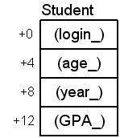

Introduction to Object-Oriented Programming
Procedural programming vs. Object-Oriented programmingProcedural programming:
In C++, these three properties are realized as:
Procedural Programming
Let's use this structure that represents a student: (What is sizeof(Student))?Also, notice MAXLENGTH is not a #define:
const int MAXLENGTH = 10; struct Student { char login[MAXLENGTH]; int age; int year; float GPA; };void display_student(const Student &student) { using std::cout; using std::endl; cout << "login: " << student.login << endl; cout << " age: " << student.age << endl; cout << " year: " << student.year << endl; cout << " GPA: " << student.GPA << endl; }
This allows this code: and this: void f1() { Student st1; st1.age = 20; st1.GPA = 3.8; std::strcpy(st1.login, "jdoe"); st1.year = 3; display_student(st1); } Output: login: jdoe age: 20 year: 3 GPA: 3.8void f2() { Student st2; st2.age = -5; st2.GPA = 12.9; std::strcpy(st2.login, "rumplestiltzkin"); st2.year = 150; display_student(st2); } Output: (May get lucky) login: rumplestiltzkin age: 7235947 year: 150 GPA: 12.9
A second attempt to "protect" the data by using functions to set the data instead of the user directly modifying it.
as well as this: void f1() { Student st3; display_student(st3); } Output: login: | age: 0 year: 4198736 GPA: 2.07362e-317
void set_login(Student &student, const char* login); void set_age(Student &student, int age); void set_year(Student &student, int year); void set_GPA(Student &student, float GPA);
void set_login(Student &student, const char* login) { std::strncpy(student.login, login, MAXLENGTH); student.login[MAXLENGTH - 1] = 0; }void set_age(Student &student, int age) { if ( (age < 18) || (age > 100) ) { std::cout << "Error in age range!\n"; student.age = 18; } else student.age = age; }
void set_year(Student &student, int year) { if ( (year < 1) || (year > 4) ) { std::cout << "Error in year range!\n"; student.year = 1; } else student.year = year; }void set_GPA(Student &student, float GPA) { if ( (GPA < 0.0) || (GPA > 4.0) ) { std::cout << "Error in GPA range!\n"; student.GPA = 0.0; } else student.GPA = GPA; }
Notes:
Now this code: results in this: void f3() { Student st3; set_age(st3, -5); set_GPA(st3, 12.9); set_login(st3, "rumplestiltzkin"); set_year(st3, 150); display_student(st3); }
struct Student
{
// All data is inaccessible from outside this structure
private:
char login[MAXLENGTH];
int age;
int year;
float GPA;
};
However, even this code will no longer work:
Illegal code: Errors:
void set_age(Student &student, int age)
{
if ( (age < 18) || (age > 100) )
{
std::cout << "Error in age range!\n";
student.age = 18; // ERROR, age is private
}
else
student.age = age; // ERROR, age is private
}
In C++, encapsulated functions are generally called methods or member functions (because they are members of the structure).
Encapsulating Functions and Data
Adding functions to the structure is simple. By declaring them in a public section, the functions (methods) will be accessible from outside of the structure:
| Structure with private data, public methods | Client access is through the public methods | |
|---|---|---|
|
|
|
|
|
|
|
|
You generally won't see the public keyword used with structures.
Members are public by default OK, but redundant struct Student { char login_[MAXLENGTH]; int age_; int year_; float GPA_; };struct Student { public: char login_[MAXLENGTH]; int age_; int year_; float GPA_; };
Finally, we need to get back a way to display the values. Our original display_student no longer can access the private members, so we have to make it part of the Student structure:
Now, this is how we use it:
Add the display method Modify the implementation struct Student { public: void set_login(const char* login); void set_age(int age); void set_year(int year); void set_GPA(float GPA); void display(); private: char login_[MAXLENGTH]; int age_; int year_; float GPA_; };void Student::display() { using std::cout; using std::endl; cout << "login: " << login_ << endl; cout << " age: " << age_ << endl; cout << " year: " << year_ << endl; cout << " GPA: " << GPA_ << endl; }
void f1()
{
// Create a Student object
Student st1;
// Using the public methods
st1.set_login("jdoe");
st1.set_age(22);
st1.set_year(4);
st1.set_GPA(3.8);
// Tell the object to display itself
st1.display();
}
Student st1; // Create a Student
st1.display(); // Undefined behavior!
Classes
In short, a class is identical to a struct with one exception: the default accessibility is private.These will work the same:
And these will work the same:
Default for struct is public Explicit public keyword struct Student { char login_[MAXLENGTH]; int age_; int year_; float GPA_; };class Student { public: char login_[MAXLENGTH]; int age_; int year_; float GPA_; };
Explicitly private Default for class is private struct Student { private: char login_[MAXLENGTH]; int age_; int year_; float GPA_; };class Student { char login_[MAXLENGTH]; int age_; int year_; float GPA_; };
We will generally be using the class keyword when creating new types that have methods associated with them. We'll use the struct keyword for POD types. (Plain Old Data types).
If you think a little more in-depth about what a data-type is, you'll see it's more than just the range of values. It is also the operations that can be performed on it. (e.g. you can't use the mod operator, %, with floating point values nor can you use the + operator with two pointers.)
Initializing Objects: The Constructor
This is the problem we need to solve:We never want to have any objects that are in an undefined state. Ever.
Client code Output (random garbage, might crash)
Recall how we initialize structures:
But with private data, using the initializer list is illegal:
struct Student { // Public by default char login[MAXLENGTH]; int age; int year; float GPA; };void f() { // Uninitialized Student Student st1; // Set values by assignment std::strcpy(st1.login, "jdoe"); st1.age = 20; st1.year = 3; st1.GPA = 3.08; // Set values by initialization Student john = {"jdoe", 20, 3, 3.10f}; Student jane = {"jsmith", 19, 2, 3.95f}; }
You'll get errors like these:
class Student { // Private by default char login[MAXLENGTH]; int age; int year; float GPA; };void f() { // This is now illegal (accessing private members directly) Student john = {"jdoe", 20, 3, 3.10f}; Student jane = {"jsmith", 19, 2, 3.95f}; }
GNU:
error: 'john' must be initialized by constructor, not by '{...}'
error: 'jane' must be initialized by constructor, not by '{...}'
main1.cpp(116) : error C2552: 'john' : non-aggregates cannot be initialized with initializer list
'Student' : Types with private or protected data members are not aggregate
main1.cpp(117) : error C2552: 'jane' : non-aggregates cannot be initialized with initializer list
'Student' : Types with private or protected data members are not aggregate
error: non-aggregate type 'Student' cannot be initialized with an initializer list
Student john = {"jdoe", 20, 3, 3.10};
^ ~~~~~~~~~~~~~~~~~~~~~
error: non-aggregate type 'Student' cannot be initialized with an initializer list
Student jane = {"jsmith", 19, 2, 3.95};
^ ~~~~~~~~~~~~~~~~~~~~~~~
So, we declare another method that will be called to construct (initialize) the object: (notice the order of public and private, the order is arbitrary)
class Student
{
public:
// Constructor (must have the same name as the class)
Student(const char * login, int age, int year, float GPA);
void set_login(const char* login);
void set_age(int age);
void set_year(int year);
void set_GPA(float GPA);
void display();
private:
char login_[MAXLENGTH];
int age_;
int year_;
float GPA_;
};
| Implementation | Client can initialize now |
|---|---|
|
|
void f()
{
// Set values by constructor (Still requires a constructor)
Student john {"jdoe", 20, 3, 3.10f};
Student jane {"jsmith", 19, 2, 3.95f};
}
Accessors and Mutators (Gettors and Settors)
Since the data in a class is usually private, the only way to gain access to it is by providing public methods that explicitly allow it.
| Adding accessors | Implementations |
|---|---|
|
|
Resource Management
The Student class so far:
| Change type of login_ | Implementation change (not 100% correct yet, has at least 2 potential bugs!) |
|---|---|
|
|
The client doesn't even know there has been a change:
void foo()
{
// Construct a Student object
Student john("rumplestiltzkin", 20, 3, 3.10f);
// This will display all of the data
john.display();
}
How about this?
john.set_login("johnny");
john.set_login("jj");
john.set_login("doofus");
| Add interface method | Add implementation |
|---|---|
|
|
void foo()
{
// Construct a Student object
Student john("jdoe", 20, 3, 3.10f);
// This will display all of the data
john.display();
// Release the memory for login_
john.free_login();
}
|
|
| Original method | Modified (correct, but still has problems) method |
|---|---|
|
|
In order to make sure that the memory is deleted, we need something like a constructor in reverse. Let's call it a destructor.login_ = 0;
Destroying Objects: The Destructor
We'd like some code that will be called when the client is done with the object. The code is another method called a destructor and is similar to the constructor.
| Add destructor | Add implementation |
|---|---|
|
|
void foo()
{
// Construct a Student object
Student john("jdoe", 20, 3, 3.10f);
// This will display all of the data
john.display();
} // Destructor is called here.
void foo()
{
Student john("jdoe", 20, 3, 3.10f);
if (john.get_age() > 10)
{
Student jane("jsmith", 19, 2, 3.95f);
} // jane's destructor called
} // john's destructor called
void f7()
{
// Construct a Student object
Student john("jdoe", 20, 3, 3.10f);
if (john.get_age() > 10)
{
Student jane("jsmith", 19, 2, 3.95f);
if (jane.get_age() > 2)
return; // Destructor's for jane
// and john called
}
}
Creating Objects
Let's modify the constructor and destructor to print a message each time they are called:
| Constructor | Destructor |
|---|---|
|
|
| Program | Output |
|---|---|
|
***** Begin ***** Student constructor for jdoe Student constructor for jsmith Student constructor for jbob login: jdoe age: 21 year: 3 GPA: 3.25 login: jsmith age: 24 year: 2 GPA: 4 login: jbob age: 23 year: 4 GPA: 2.98 ***** End ***** Student destructor for jbob Student destructor for jsmith Student destructor for jdoe |
Student john("jdoe", 20, 3, 3.10f);
Student jane("jsmith", 19, 2, 3.95f);
Student jim("jbob", 22, 4, 2.76f);
Notes:

Notice that the methods are not part of the object. This may seem surprising at first. So how does the display method know which data to show?
john.display(); jane.display(); jim.display();
// Nowhere does this code reference john, jane, or jim
void Student::display()
{
using std::cout;
using std::endl;
// These members are just offsets. But offsets from what exactly?
cout << "login: " << login_ << endl;
cout << " age: " << age_ << endl;
cout << " year: " << year_ << endl;
cout << " GPA: " << GPA_ << endl;
}